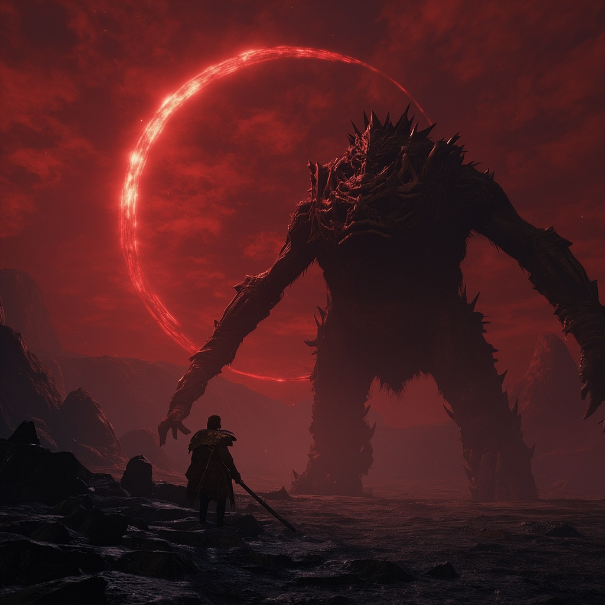

The complete field manual for Elden Ring Nightreign — class builds, boss counters, co-op strategies, and rune progression, all in one place.

Start Here — Beginner's GuideMaster solo expeditions with class picks, relic builds, and boss strategies optimized for lone Nightfarers. Features Patch 1.03.2 updates and director-proven tactics.
Read Solo Guide →Massive Raider and Executor buffs, a new Nightlord boss (The Dusk Warden), Raids checkpoints, and full balance changes in the biggest Nightreign update yet.
Read Patch Notes →Side-by-side comparison of gameplay, combat feel, solo vs co-op, progression, and replayability. Data-driven verdict for undecided players.
Read Comparison →Master the day/night cycle with optimal routes, when to fight versus when to farm, and survival strategies for every phase of a run.
Master the Cycle →Complete elemental weakness table, status effect vulnerabilities, and proven boss strategies for every major encounter in Nightreign.
Exploit Weaknesses →Everything you need to know before your first run — controls, objectives, class roles, and what to prioritize in the opening hours.
Read Guide →Full breakdown of every class, with damage profiles, armor ratings, and an updated S/A/B/C tier ranking for solo and co-op.
View Tier List →Mechanic-by-mechanic breakdown of every major boss fight, including the most common mistakes and how to avoid them.
Beat the Bosses →Matchmaking, summoning friends, role composition, and the specific tactics that make co-op runs consistent instead of chaotic.
Play Co-op →Optimal relic setups for every class updated for Patch 1.03.2. Solo and co-op builds with relic synergy analysis and farming routes.
Optimize Your Build →Where to find runes efficiently, which early-game farms outperform the rest, and how to manage levels across a multi-run roguelike loop.
Farm Faster →S-tier picks for every playstyle, updated with the latest patch data.
Frame-perfect reads and safe windows for every major encounter.
Team composition theory and the aggro mechanics you need to know.
Fastest routes and most reliable rune spots across all difficulty tiers.